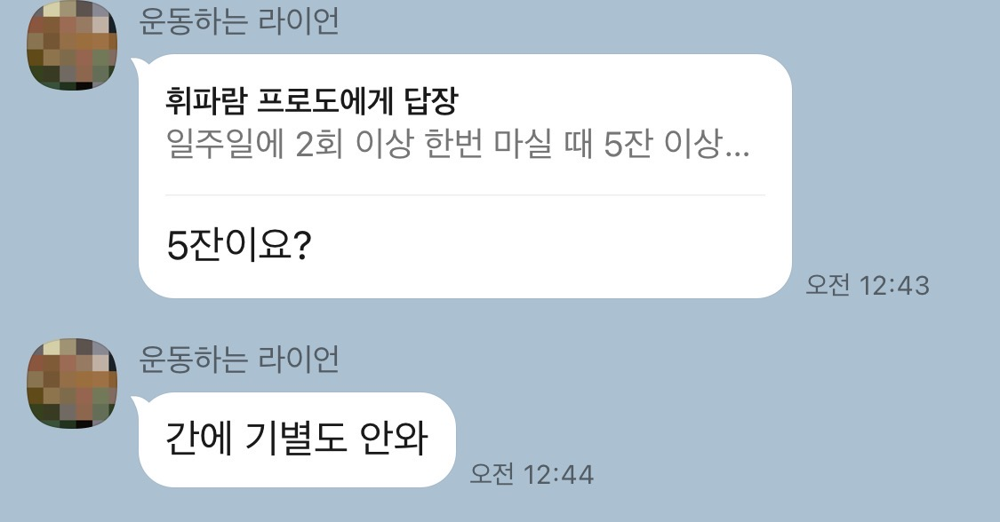

서론
1. 연구 목적
본 연구는 서울시립대학교 산업디자인학과 시각디자인전공 양으뜸 교수님의 창의적디자인리서치 수업의 일환으로
진행되었다.
주어진 과제는 나의 삶에 관한 주제로 우표를 제작하는 것이었으며, 일주일 평균 음주량이 21잔(Ryu Chae Eun’s Calender[RCEC], 2022)에 달하는 대학생으로서 음주를
주제로 정하지 않을 수 없었으므로 본 주제를 선정했다.
본 연구의 목적은 대학생들의 음주실태와 음주 시 신체・감정상의 변화를 살펴봄으로써,
이를 토대로 딱히 말해도 새겨듣지는 않겠지만 과음 시 발생 가능한 위험상황
* 대표적으로 '전남자친구에게
전화걸기'가 있다.
에 대한 경각심을 고취하고자 한다.
본 연구에서는 1차적으로 적절한 표본 집단으로 보기 어려운 류채은(Ryu Chae eun)의 SNS 팔로워를 중심으로 대학생들의 1주 음주량에 대해 설문하였다. 해당 설문은 사실상 본
연구의 목적을 달성하는
데에 크게 도움이 되지는 않았으며, 연구자료의 분량을 늘리고자 본 논문에 포함하였다. 2차적으로는 음주 시 신체적・심리적으로 일어나는 변화를 측정하는 것에 목적을 두고 실험을 진행하였다.
연구방법 - 1차 설문
1. 연구 설계
본 연구의 1차 설문은 대학생들의 1주 음주량에 대해 조사하였다. 1주 평균 음주량의 경우 기존의 연구에서도
다수 진행되었으나, 그보다도 심각하게 적은 수의 표본으로 재설문한 데에는 다음의 이유가 있다.
- 3 -
1) WHO(World Health Organization)의 월간폭음 기준에 대한 의문
WHO는 여성 기준 1주에 5잔 이상 음주할 경ㅇ무 월간폭음자로 분류한다. 그러나 필자의 1주 평균
음주량은
21잔이었으며, 이에 큰 충격을 받아 실제 주변 대학생들의 음주량을 조사하고자 하였다.
2) 필자의 심신 안정 필요성
(1)에서 받은 충격에 대해 대학생들이 공통적으로 유사한 감정을 느끼는지 확인할 필요가 있었으며, 이를 통해
'나만 그런 게 아니구나' 하는 심리적 안정을 얻고자 하였다.
2. 연구 대상 및 자료 수집
1차 설문의 연구대상은 500명에 달하는 Ryu Chae eun의 SNS
* @r.chachae._ 팔로우 부탁합니다.
팔로워들이었으나, 그 중 4%에
해당하는 20명(남: 10%, 여: 90%)만이 설문에 답변하였다. 이 표본은 첫째,
애초에 필자와
친ㅇ분ㄹ을
맺기 위해서는 어느 수준 이상의 주량을 갖추어야 한다는 점, 둘째, 그 수가 터무니없이 적다는 점에서 전혀 적절한 표본집단으로 볼 수 없다. 그러나 해당 설문의 목적은 오로지 필자의 심신
안정이었기에 표본집단의
적합성은 고려하지 않았다.
1차 설문은 세 가지 질문으로 구성하였으며, 과제로 진행하는 설문임을 미리 공지하였다. 첫째는
‘일주일에 몇
회 정도 술을 드시나요?’, 둘째는 ‘한 번 마실 때 몇 잔(4) 정도 드시나요?
(소주 기준)’, 셋째는
‘주로 어떨 때 술을 드시나요?’로 구성되었다. 설문이 종료된 후 표본집단에게 WHO가 제시한 월간폭음의 기준을 설명하였으며, 설문 전 예상했던 바와 일치하는 반응을 수집할 수 있었다.

- 4 -
연구방법 - 2차 실험
1. 연구 설계
2차 실험은 상대적으로 건강한 간을 가진 한국 대학생이 ㅇㅕㄴ속적ㅇ;ㄴ 음주를 어느 정도까지
버틸 수 있는지
확인하고, 각 음주 단계별 신체 변화를 파악할 목적으로 진행되었다. 사실상 1차 설문에서는 최종 과제결과물에 대해
크게 영양가 있는 결과를 eh더출ㄹ해내지 못 하였으나, 2차 실험의 경우 직접적으로 최종 과제물에 활용하기 위하여 진행된 서술적 조사연구이다.
2. 연구 대상 및 자료 수집
2차 실험의 연구대상은 첫째, 충분한 자료가 수집될 정도의 주량을 가진 자, 둘째, 음주 시 텐션이 떨어지면
술맛이 떨어진다는 선행연구(My Personal Opinion [MPO], 2022) 결과에 따라 젖적ㅇ수준
이상의 텐션을 가진 자 두 가지 기준에 의해 철저히 엄선되었다. 피험자는 2명으로, 피험자A는 서울시립대학교에 재학 중인 만 21세 여성(Ryu Chae eun), 피험자B는 국민대학교에 재학
중엔 만 21세
여성(Jeon Sobin)이다. 실험 진행 전 피험자에게 기존 음주습관에 대한 설문을 받았으며, 설문 결과는 다음과 같다.
• 피험자A의 1회 평균 음주량은 10~14잔, 1주 평균 음주량은 20잔 이상이다. 음주 시 다소 감정이 격양되고,
대화의 음량
조절에 어려움을 겪으며, 전화를 거는 것이
가장 큰 술버릇이다.
• 피험자B의 1회 평균 음주량은 역시 10~14잔, 1주 평균 음주량 역시 피험자A와 비슷하다. 음주 시 연애에 대한
화제를 자주 내며, 본인은 타자에 어려움을 겪지 않는다
- 5 -
고 생각하지만 비음주자의 시선에서는 틀림없이 맞ㄴ취 상태임을 인지할 수 있는 수준이다.
3. 연구 도구
2차 실험은 피험자들이 음주하는 모습을 직접 관찰하고 기록하며 진행되었다. 실험은 2022년 4월 9일 오후
7시 11분께 시작되어 대략 8시간 후인 2022년 4월 10일 오전 3시 15분께 종료되었다. 1인당 총 음주량은 피험자 A와 B의 최대 음주량에 달하는 20잔이었으며, 실험 진행 전
우려되었던 바가 몇 가지 있었으나 ㅈ넌혀문제업ㅇ이 진행되었다.


1잔을 마실 때마다 아래 사항을 기록하도록 하는 방식으로 실험이 진행되었다.
1. 동심원으로 이루어진 특정 도형을 그리도록 하였다.
2. 100자 내외의 텍스트를 동일하게 타ㅏㅏ이픽ㅇ하도록 하였다.
3. 환각의 진행상태를 가장 잘 보여줄 수 있는 신체인 눈을 촬영하도록 하였다.
4. 현재 신체 혹은 심리상태를 자유롭게 기록하도록 하였다.
피실험자 1인당 20세트씩, 총 40세트의 자료가 수집되었으며, 유의미한 결과 도출이 가능한 세트를 세밀하게
분석함으로써 최종
r결ㄹㅋ과뭃인 우표에 적용할 시각적 왜곡효과의 힌트를 얻고자 한다.
연구결과 - 1차 설문
1. 제목이 들어갈 예정
- 6 -